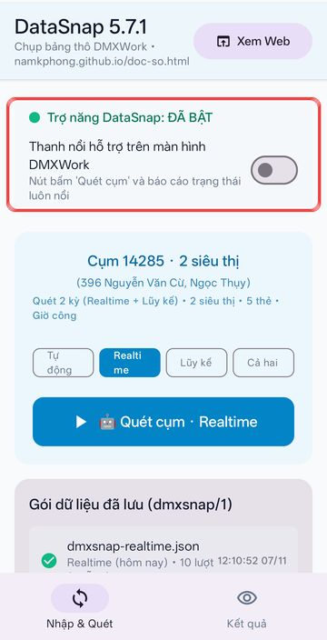
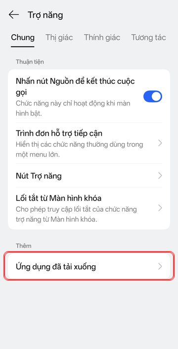
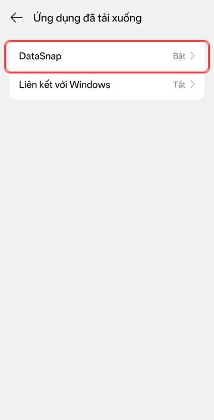
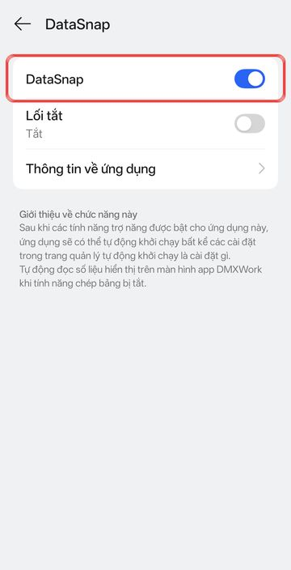
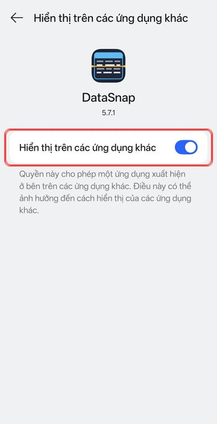
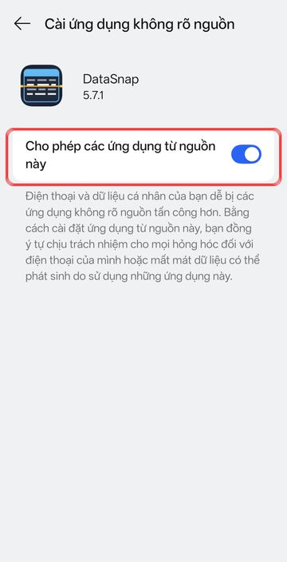

Máy hỏi “Cho phép cài ứng dụng từ nguồn này” → bật Cho phép → quay lại bấm Cài đặt.
Nếu Play Protect cảnh báo “ứng dụng không rõ” → Chi tiết → Vẫn cài đặt.
Có bản mới: mở DataSnap là app tự hỏi → bấm Cập nhật → Cài đặt. Lần đầu máy bắt bật “Cho phép từ nguồn này” cho DataSnap (một lần). Không cần gỡ bản cũ, không mất cài đặt.
🔑 Cấp quyền cho DataSnap (3 quyền)
Ảnh chụp trên OPPO Find X9s (ColorOS, Android 16) — máy khác tên mục có thể hơi khác. Khung đỏ = chỗ cần bấm.

1. Mở DataSnap. Dòng Trợ năng phải xanh “ĐÃ BẬT”; gạt Thanh nổi để app mở trang cấp quyền hiển thị.

2. Bấm dòng Trợ năng trong app (hoặc Cài đặt → Trợ năng) → Ứng dụng đã tải xuống.

3. Chọn DataSnap.

4. Gạt DataSnap sang bật → máy hỏi thì bấm Cho phép. Quyền 1/3.

5.Hiển thị trên các ứng dụng khác → bật (để nút nổi “Quét cụm” hiện trên DMXWork). Quyền 2/3.

6.Cho phép các ứng dụng từ nguồn này → bật (máy tự hỏi lần đầu bấm Cập nhật). Quyền 3/3.
Cài bản mới đè lên đôi khi máy tự tắt Trợ năng → mở app thấy “CHƯA BẬT” thì làm lại bước 2–4.
2 · Lần đầu dùng
Mở DataSnap → cấp đủ 3 quyền theo mục 🔑 Cấp quyền ở trên.
Đăng nhập DMXWork bằng tài khoản quản lý cụm.
Quay lại DataSnap → bấm Quét cụm. Lần đầu app tự nhận cụm + các siêu thị từ báo cáo Giờ công, rồi quét số.
Tab Kết quả: bấm Chọn ngành ở mục Thi đua để chọn chương trình theo dõi, và Chọn ngành ở mục Ngành hàng BI để chọn ngành hàng quan tâm (nút ★ Quan tâm / Tất cả ngành chuyển nhanh; áp cả cho thẻ /nv của bot); kiểm danh sách nhân viên chính (tự lọc BP All In One theo giờ công, tích/bỏ tích để sửa).
3 · Gắn nhóm LINE
Mời bot LINE vào nhóm của siêu thị (xin anh Phong mã mời bot).
Trong nhóm gõ /dangky <mã siêu thị>, ví dụ /dangky 14285. Nhóm cả cụm: /dangky 14285 8807.
Sau mỗi lần Quét cụm, gõ /so (Realtime hôm nay) hoặc /tonghop (Lũy kế tháng).
Mỗi siêu thị chỉ nhận số từ MỘT điện thoại (máy gửi đầu tiên). Đổi máy: máy cũ ngừng gửi 3 ngày thì máy mới tự nhận thay.
Không chia sẻ ảnh/số ra ngoài nhóm nội bộ. App không lưu số lên mạng; bot chỉ giữ tạm 6 tiếng để trả lời /so, /tonghop.